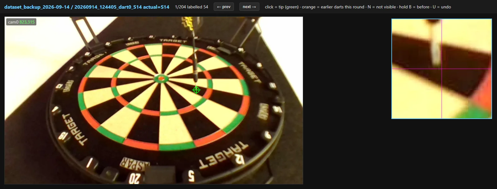
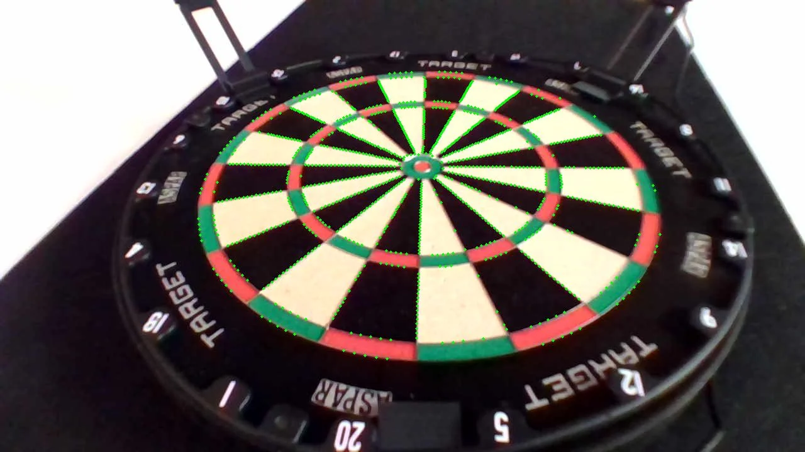

Rig
Vision and scoreboard were built and tested separately and meet through one message type, so the scoreboard was running before a camera was attached.
/dev/v4l/by-path, exposure & white-balance locked manualsystemd service with a tuning UI on the LANpytest cases across 9 modulesVision
Three frames in, one point out. Each camera undistorts its frame and maps
it onto the board plane through its calibration; a dart is found by
frame differencing inside the board region only — anything past
~180 mm (rim, background, a reaching hand) is masked out. The three
per-camera tips fuse by agreement rather than by averaging: each estimate
that sits within 15 mm of a candidate joins its cluster, the largest
cluster wins and only its members are averaged, so an occluded or
mis-detected view is dropped instead of dragging the answer. Where the
dart reads as a streak rather than a point, the fallback intersects each
camera’s dart axis on the board plane in least squares, and refuses the
result when the lines are near-parallel instead of emitting a wild point.
That gives one (x, y) in millimetres from the bull, and
coordToSegment turns that into a score. The hardware and the
simulator both defer to that one function.
The detection server on the Pi serves a tuning UI: it shows its guess and the tip it found in each camera, I confirm or correct it, and every confirmation is saved as a labelled throw. The scored dart is folded into the background so the next throw is detected incrementally.

Calibration
No checkerboard. The board’s own geometry is known exactly — twenty sector wires and five ring radii — so each camera projects those curves into its image, snaps every sample to the strongest edge along the curve normal, and jointly least-squares fits lens distortion (k1, k2) and the homography onto the board plane. A pure homography can’t bend, so its residual on those points is the lens distortion.

| Measured | Result | Meaning |
|---|---|---|
| Calibration RMS, per camera | 0.46 / 0.71 / 0.56 mm | Reprojection residual on the fit’s own ~1,200 snapped edge points, per camera. In-sample — it says the plane fit is consistent with the wires it was fitted to, not what a dart tip costs. |
| Segments called correctly, 17 Sep run | 53 / 71 · 75% | Every throw scored by the rig, then hand-checked against where the dart actually landed. 45 of the 71 fired on the auto trigger, 26 by hand. |
| … of those, with all three cameras seeing the dart | 50 / 64 · 78% | When a view drops out the call gets worse fast: 2 of 4 on two cameras, 1 of 3 on one. |
| Same rig, one camera out of focus | 14 / 57 · 25% | An earlier run the same afternoon with cam0 blurred. The pipeline degrades quietly rather than refusing — the reason focus is now checked before a session. |
| Tip error in millimetres | not yet measured | The 71 throws are labelled by segment, not by a hand-measured tip position, so there is no mm error to quote yet. |
The loop from camera to called segment is closed and measured; what is left is wiring those calls into the scoreboard’s event feed and measuring the tip error in millimetres rather than by segment.
Scoreboard
One direction only: feed → events → reducer → state → render. The UI never touches match state, so undo is “drop the last dart and replay” and a whole match is a log I can replay from the start. 501 and double-out rules are pure functions with no framework in them. The checkout is computed by a finish-path solver instead of a 170-row table, and the simulator aims with the same solver, so the suggested finish and the sim can’t drift apart. The interface is drawn by hand and sliced into the board, the digits and the names by a script, so it scales without going blocky.
Coming next
Live scoring. Wire the rig’s detections into the scoreboard’s event feed, measure hit error against hand-scored throws, then play real matches on it. The learned tip detector goes onto the Pi in the same pass, for the throws differencing gets wrong — a dart behind another dart, a hand still in frame. It has no held-out error number yet, and nothing is claimed for its speed until it is timed on the Pi itself.
Practice mode. The board calls a segment at random, you throw at it, and you’re scored on how far the dart landed from the target rather than what it happened to hit. Same event feed, different rules file.
Player profiles. Every dart from practice and real matches is saved per player with where it landed and what it was aimed at. From that: a map of where you actually land versus where you aim, which segments you hit reliably, how you miss (short, wide, high), and strengths and weaknesses tracked over time so practice mode can call the segments you’re worst at.
Other games. Cricket and around-the-clock. The rules are shaped so each is a new file, not a rewrite.